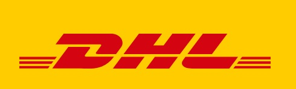
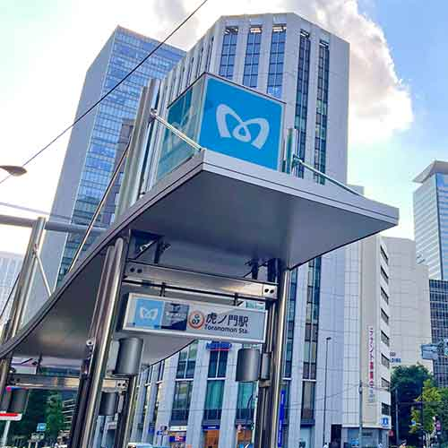

MJI
ビジネス日本語に強い日本語学校
オンラインも対面も柔軟にレッスンを提供
初級から上級までレベルに合わせたカリキュラム
Scroll
むらさきジャパニーズインスティテュート(MJI)は、25年以上に渡って外資系企業の駐在員・インターン生やそのご家族に独自のティーチングメソッドによる質の高い日本語レッスンを提供してきました。 さまざまなニーズにお応えできるよう、ビジネス日本語や日常会話をはじめ、法律・金融、ITなどの専門分野日本語レッスン、さらには企業研修、在留資格変更・更新などのビザサポートも提供しています。 私たちは、日本語を学ぶことでキャリアアップをしたいと考える全ての外国人ビジネスパーソンの一助となることを目指しています。
むらさきジャパニーズの強み
WHY MURASAKI JAPANESE?
-
テーラーメイドレッスン
ビジネス交渉のための日本語、日本で働くための文化的知識・能力の習得、法律・金融・ITといった専門分野の日本語など、一人一人の目的・目標・ニーズに合わせてコースをデザインします。コース途中でのカリキュラム変更も柔軟に対応します。 -
英語による文法・語彙説明
MJIの教師は日本語の文法や語彙の説明を英語で行うことができます。そのため、日本語学習が初めてで不安という方でも安心してレッスンに参加できます。 素早く理解できるので、練習に多くの時間を割くことができ、上達も早くなります。 -
プロフェッショナルな教師陣
フレンドリーでプロフェッショナルな教師陣が質の高い日本語レッスンを提供します。教師全員日本語教師の資格を持ち、ビジネス現場での経験もあります。 定期的に勉強会を開き、最新の日本語教育研究の成果をレッスンに生かしています。 -
オンライン／対面レッスン
レッスンスタイルはオンライン・対面のどちらか一方、もしくは両方を組み合わせたハイブリッドレッスンも可能です。 MJIの建物は虎ノ門（東京都港区）にありますが、東京および周辺のオフィスに伺う出張レッスンも提供しています。 -
柔軟なレッスンスケジュール
MJIの日本語レッスンは7:30から21:00の間で提供しています。 出社前や仕事終わり、昼休憩中のレッスンなど、自分のスケジュールに合わせて日本語レッスンを受けることができます。 レッスン前日の急なキャンセルにも柔軟に対応しています。 -
ビザ申請サポート
当校所長の村崎は行政書士の資格を有しており、日本語レッスンだけではなく、帰化、永住、就労ビザ申請などのサポートも行っています。 ストレスや不安を感じるビザ申請書類の準備もスムーズに進めることができます。
日本語コース
JAPANESE COURSES

企業向け日本語研修
CORPORATE JAPANESE LESSONS
言語・マナー・文化が
身に付く実践的カリキュラム
MJIでは、外国人を雇用している企業向けに日本語研修プログラムを提供しています。テーラーメイドの速習カリキュラムで、日本の会社で働く上で必要となるコミュニケーションスキルを短期間で身につけることができます。 レッスン内容は、一般的なビジネス日本語はもちろん、企業の業種に合わせた専門分野日本語レッスン、日本のビジネスマナートレーニング、さらには異文化理解トレーニングも含まれます。 正規雇用の外国人社員、特定技能ビザの従業員、技能実習生それぞれに合わせた柔軟なレッスンを提供し、希望される場合にはビザ申請・更新のサポートも行っています。
に日本語レッスンを提供してきました
- 
ロケーション
SCHOOL LOCATION
-
ビジネスの中心地、虎ノ門
MJIは東京のビジネスの中心地、虎ノ門にあります。この場所で25年以上に渡り、ビジネス日本語レッスンを提供し、独自の教授法を磨いてきました。
-

駅から歩いてすぐの立地
虎ノ門ヒルズ駅（日比谷線）から徒歩1分、虎ノ門駅（銀座線）から徒歩2分、新橋駅(山手線)からも徒歩圏内で、非常に通いやすいところにあります。
-
出張レッスンも可能
スケジュールの都合などで通うことが難しい場合は、東京および周辺エリアであれば出張レッスンも行っています。 出張エリアの詳細はお問い合わせください。
お知らせ
NEWS & NOTICES
無料体験レッスン
MJIのレッスンを
体験してみませんか？
MJIの日本語レッスンにご興味がおありでしたら、ぜひ一度体験レッスンを受けてみてください。
レッスン後にはカウンセリングを行い、最適なカリキュラムをご提案します。
英語での対応も可能なので、お気軽にお申し込みください！